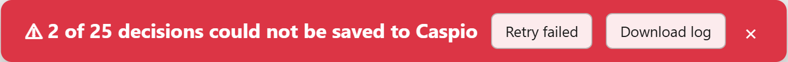

Caspio Approval Assistant
A Chrome extension that streamlines the Caspio approval workflow. Instead of manually switching between external vendor pages and Caspio to submit each approval, this extension lets you review vendors in a continuous flow — make your decision on the vendor's page, and the extension saves it to Caspio in the background, verifies it, and keeps a downloadable review log.
Overview
When working in Caspio, you often need to:
- Click a vendor link (e.g., an Amazon seller page) to review their information
- Go back to Caspio
- Click Edit on that row
- Select an approval status from the dropdown
- Click Update
- Repeat for the next vendor
This extension automates steps 2–5 entirely. You simply click through vendor pages and make your decisions — the extension queues the Caspio updates and executes them in the background.
Key features
- Continuous review — an approval toolbar on every vendor page; one click saves the decision and opens the next vendor.
- Duplicate history at a glance — the Caspio Duplicates: what happened before column is shown prominently on each vendor page.
- Fast background saving — decisions are sent straight to the Caspio server, up to 3 at a time.
- Verified saves — every decision is checked against the value Caspio actually stored; failures are retried automatically and can be resubmitted with one click.
- Progress you can see — a pending counter on the vendor toolbar, a large status bar at the top of the Caspio page, and ✓ / ✗ marks on each Caspio row.
- Review log (CSV) — every decision and its result is logged and downloaded automatically when a session ends.
Before vs. After
| Without Extension | With Extension |
|---|---|
| Open vendor page | Open vendor page |
| Review vendor | Review vendor (duplicate history shown on top) |
| Switch back to Caspio | Click approval button on the toolbar |
| Click Edit | (automatically navigates to next vendor) |
| Select approval value | |
| Click Update | |
| Click next vendor link |
Installation
Step 1: Download the Extension
Download or clone the extension folder to your computer. The folder should contain the following files:
Caspio/
├── manifest.json
├── background.js
├── caspio-content.js
├── target-content.js
├── overlay.css
├── manual.html (this manual)
├── README.md
├── screenshots/ (images used by this manual)
└── icons/
├── icon16.png
├── icon48.png
└── icon128.pngStep 2: Open Chrome Extensions Page
Open Google Chrome and navigate to the extensions management page by either:
- Typing
chrome://extensionsin the address bar and pressing Enter, or - Clicking the three-dot menu (⋮) → Extensions → Manage Extensions
Step 3: Enable Developer Mode
In the top-right corner of the extensions page, toggle the Developer mode switch to the ON position.
Step 4: Load the Extension
- Click the Load unpacked button that appears in the top-left area after enabling Developer mode.
- In the file browser dialog, navigate to and select the Caspio folder (the one containing
manifest.json). - Click Select Folder.
Step 5: Verify Installation
After loading, the extension should appear in your extensions list with the name Caspio Approval Assistant and version 1.5.1. Verify that:
- The extension is shown as enabled (toggle is blue/on)
- No error messages are displayed
The extension uses these Chrome permissions: storage (queue and log), tabs / activeTab / scripting (coordinating the Caspio and vendor tabs), and downloads (saving the review log CSV to your Downloads folder).
Updating to a New Version
- Replace the files in the extension folder with the new version.
- Go to
chrome://extensionsand click Reload (circular arrow) on the Caspio Approval Assistant card. - Refresh the Caspio page (F5). Pages that were open before the reload keep running the old script until refreshed.
- Start a new review session by clicking a vendor link — sessions started before the update do not carry the new data (e.g. duplicate history).
How It Works
The extension operates in four stages:
The key advantage is that Stage 2 and Stages 3–4 run in parallel — you keep reviewing vendors while Caspio saves your previous decisions in the background.
Submission details
- Speed. Caspio's server needs about 1.7 s per record (≈0.4 s to read the row + ≈1.3 s to save it). Saving up to 3 records in parallel brings the effective cost to roughly 0.6 s per record.
- Non-destructive. Before saving, the extension reads the row's current values and re-sends every editable field unchanged except the approval field.
- Verified. Caspio's response contains the row as stored. A decision only counts as Saved when the stored approval value matches your choice.
- Retried. If a save fails, the extension switches to one-at-a-time mode and tries again; if that also fails, it falls back to clicking Edit → select → Update on the Caspio page. Only then is the decision marked Failed, and you can resubmit it with Retry failed.
- Resilient. Each request times out after 30 s so a stuck request cannot block the queue, and the Caspio tab is protected from Chrome's automatic tab discarding while a session is active.
Usage Guide
Starting a Review Session
- Open your Caspio data page in Chrome (e.g.,
https://c1abz485.caspio.com/dp/...). - Click on any external vendor link in the table (e.g., an Amazon seller link).
- A new tab opens with the vendor's page. The extension automatically:
- Scans all rows in the Caspio table
- Builds a review queue starting from the row you clicked
- Displays the approval toolbar at the top of the vendor page
Making Approval Decisions
Once the approval toolbar appears at the top of the vendor page:
- Review the vendor's information on the page, including the duplicate history (see Duplicate History).
- Click one of the approval buttons. The available buttons depend on which DataPage you started from (see Approval Options):
- Catman Approval page: Approved without KAM Approved with KAM Declined
- Initial Application Sorting page: OK (approved) Declined
- The page automatically navigates to the next vendor in the queue.
- The toolbar shows your progress (e.g., Review 43 / 50) and how many decisions are still being saved to Caspio (Caspio: 3 pending or Caspio: all saved). If the pending number keeps growing, Caspio is temporarily behind — it catches up on its own; just keep the Caspio tab open.
Duplicate History
If the Caspio DataPage has a Duplicates: what happened before column (or its Russian name Дубли: что было раньше), its value is shown on every vendor page:
- Duplicates found — an amber banner below the toolbar. Each duplicate type (
PHONE_DUP,COMPANY_DUP,STORE_DUP,WECHAT_DUP,BL_DUP, …) is shown on its own line, with the number of earlier approved (green) and declined (red) applications and the date of the last one. - No duplicates (the cell is empty / NULL) — a small green No duplicates tag next to the progress indicator.
- DataPage without the column — nothing is shown.
Skipping a Vendor
If you want to skip a vendor without making a decision:
- Click the Skip button on the toolbar.
- The page navigates to the next vendor immediately.
- Nothing is saved to Caspio for the skipped vendor; it is recorded in the review log with status Skipped.
Status = Skipped and process those records on the Caspio page.
Stopping a Review Session
To end the review session before all vendors have been reviewed:
- Click the Stop button on the toolbar.
- The toolbar disappears and the current page remains open.
- Any decisions you already made continue to be saved in the background on the Caspio tab.
- When they have all been processed, the review log of the session is downloaded automatically.
Completing All Reviews
When you reach the last vendor in the queue and make your decision:
- The vendor tab closes automatically.
- Chrome switches back to the Caspio tab.
- The Caspio tab finishes saving any remaining decisions; the status bar at the top of the page shows the progress (see below).
- When every decision of the session has been processed, the review log is downloaded automatically (see Review Log (CSV)).
Checking Results on the Caspio Page
While decisions are being saved, and after a session, a large status bar is shown at the top center of the Caspio page:

Each processed record in the Caspio table is also marked:
- Row tinted green with a ✓ Saved: Declined tag — the value was verified on the server. If the approval column is visible in the row, it is updated to the stored value.
- Row tinted red with a ✗ Not saved: Declined tag — the decision could not be saved.
Retrying Failed Decisions
- On the red status bar, click Retry failed.
- The failed decisions are put back into the queue and saved again; the bar turns amber while they are processed.
- The log entries are updated in place (the Attempts column increases).
If a decision keeps failing, check the Error column of the review log (see Troubleshooting).
Review Log (CSV)
Every decision (approval or skip) and its save result is recorded. The log is saved straight to your Chrome Downloads folder as Caspio_review_log_YYYY-MM-DD_HHMMSS.csv:
| How | What is exported |
|---|---|
| Automatically when a session ends (last vendor reached, or Stop clicked) and all its decisions have been processed | That session |
| Download log button on the Caspio status bar | The current / latest session |
Clicking the extension icon in the Chrome toolbar (file name Caspio_review_log_all_….csv) — useful if the Caspio tab was closed | All sessions from the last 14 days |
| Column | Meaning |
|---|---|
| Session Started / Session ID | When the review session started and its identifier |
| Position | Position in the queue, e.g. 43 / 50 |
| Decided At | When you clicked the button |
| Record ID / Company / Target URL | The Caspio record and the vendor page reviewed |
| Duplicates | The duplicate history shown during review |
| Decision | The value you chose (empty for skips) |
| Status | Saved, Failed, Skipped, or Pending (not processed yet) |
| Method | AJAX (fast path) or UI (Edit → select → Update fallback) |
| Attempts | Number of save attempts, including retries |
| Saved At / Value in Caspio | When it was verified and the value stored in Caspio |
| Error | Why a save failed (empty when saved) |
The file is UTF-8 with BOM, so Excel shows Chinese company names correctly. Log entries are kept in the browser for 14 days.
Approval Options
The approval buttons shown on the toolbar depend on which Caspio DataPage you started the review from. The extension currently supports two DataPages.
DataPage 1 — Catman Approval
Started from /dp/111d6000ed43124f32b24bd99611. Shows three options:
| Option | Button Color | Value Set in Caspio |
|---|---|---|
| Approved without KAM | Green | Approved without KAM |
| Approved with KAM | Blue | Approved with KAM |
| Declined | Red | Declined |
These values correspond exactly to the options in the CatmanApproval dropdown field in Caspio's inline edit form.
DataPage 2 — Initial Application Sorting
Started from /dp/111d6000f90d0b783d8f420784b1. This page only displays applications whose Target Market field is empty, so every record needs a decision. Shows two options:
| Option | Button Color | Value Set in Caspio |
|---|---|---|
| OK (approved) | Green | OK (approved) |
| Declined | Red | Declined |
These values correspond exactly to the options in the Target Market dropdown field in Caspio's inline edit form.
Toolbar Reference (Vendor Page)
The approval toolbar appears at the top of each vendor page during an active review session. The approval buttons vary by DataPage; Skip and Stop are always present.
| Button | Preview | Action |
|---|---|---|
| Approved without KAM | Approved without KAM | (Catman Approval page) Save and go to next vendor |
| Approved with KAM | Approved with KAM | (Catman Approval page) Save and go to next vendor |
| OK (approved) | OK (approved) | (Initial Application Sorting page) Save and go to next vendor |
| Declined | Declined | Save decline and go to next vendor |
| Skip | Skip | Skip this vendor (logged as Skipped) and go to next |
| Stop | Stop | End review session; decisions already made continue saving |
| Indicator | Meaning |
|---|---|
Review 43 / 50: | Position in the review queue |
| No duplicates (green tag) | The record's Duplicates column is empty |
| Amber Duplicates banner | The record has duplicate history (see Duplicate History) |
| Caspio: all saved (gray) | Every decision so far has been processed |
| Caspio: N pending (amber) | N decisions are still being saved in the background |
| · M failed (red) | M decisions of this session could not be saved — use Retry failed on the Caspio page |
Status Bar Reference (Caspio Page)
| Element | Meaning |
|---|---|
| ⏳ Saving to Caspio: N pending (amber) | Decisions are being saved; keep the tab open. · M failed is appended when some have failed. |
| ⚠ M of N decisions could not be saved to Caspio (red) | Saving finished with failures |
| ✓ All N decisions saved to Caspio (green) | Saving finished, everything verified (shown for 30 minutes after the session ends) |
| Retry failed | Resubmit the failed decisions of the latest session |
| Download log | Download the review log CSV of the latest session |
| × | Hide the bar for this session |
Troubleshooting
The toolbar does not appear on the vendor page
Cause: The extension may not be loaded or enabled, or the Caspio page was opened before the extension was (re)loaded.
Fix: Go to chrome://extensions and verify the extension is enabled. If it shows errors, click Reload. Then refresh the Caspio page and click a vendor link again.
The toolbar appears but nothing happens when I click a button
Cause: The Caspio tab may have been closed.
Fix: Make sure the Caspio data page is still open in another tab. The extension needs it to save approvals.
The pending count does not go down
Cause: The Caspio tab was closed, reloaded with a different filter, or is still running an old version of the script.
Fix: Switch to the Caspio tab and refresh it (F5) on the same DataPage. Pending decisions resume automatically. Records that are no longer shown on the page cannot be saved and will be marked Failed — see below.
Some decisions are marked Failed / Not saved
Open the review log and check the Error column. It lists every attempt in order, e.g. AJAX #1: … | AJAX #2: … | UI: … — the first entry is usually the root cause:
| Error | Cause | Fix |
|---|---|---|
Record not found on the current Caspio page … | The record is no longer in the Caspio table (page reloaded with a different filter, another page of results, or already processed by someone else). | Show the record on the Caspio page again and click Retry failed, or update it manually. |
Value was not saved: Caspio shows "…" instead of "…" | Caspio accepted the request but stored a different value. | Click Retry failed. If it repeats, the dropdown options may have changed — see below. |
no response from Caspio within 30 s / HTTP … | Network problem or Caspio server issue. | Check your connection / Caspio login, then click Retry failed. |
Caspio did not return this record … (row position N; Caspio returned record(s) X) | Caspio located a different row than expected — the table changed on the server since the page was loaded. | Refresh the Caspio page and click Retry failed. |
Caspio inline edit form did not open / Option "…" could not be selected … | The UI fallback could not operate the Caspio form (usually after the fast path already failed — check the earlier entries). | Refresh the Caspio page and click Retry failed; otherwise update the record manually. |
The review log was not downloaded
Cause: The Caspio tab was closed before all decisions were processed, or Chrome blocked the download.
Fix: Click the extension icon in the Chrome toolbar to download all logs from the last 14 days. Check chrome://downloads if nothing appears.
Chrome shows “Leave site?” when I close or reload the Caspio tab
Cause: Decisions are still waiting to be saved.
Fix: Click Cancel and wait until the status bar turns green or red. Leaving anyway does not lose the decisions — they resume the next time you open the same Caspio DataPage — but they are not saved in the meantime.
Caspio shows "Invalid entry in one or more fields"
Cause: The dropdown values may have changed in Caspio.
Fix: Manually click Edit on any row in Caspio, open the approval dropdown (CatmanApproval or Target Market), and check that the option values match those listed in Approval Options. If they have changed, the extension configuration needs to be updated.
An approval was saved, but another column looks blank or changed
Cause: The fast path re-submits every editable field. If a DataPage's editable columns changed in Caspio and the extension's field list is out of date, a newly added column may be submitted blank.
Fix: Update ajax.editableFields for that DataPage in caspio-content.js, or clear the extension's cached field list so it re-discovers the current fields. After a Caspio schema change, verify one record's other columns are preserved before running a large batch.
The extension does not pick up all rows
Cause: Only rows visible on the current Caspio page are scanned.
Fix: Make sure your Caspio page is configured to display all rows (the cbCurrentPageSize parameter should be set high enough, e.g., 999).
The extension stopped working after a Chrome update
Fix: Go to chrome://extensions, find Caspio Approval Assistant, and click Reload. If that does not work, remove the extension and load it again using the installation steps above.
FAQ
Q: Does the extension modify any data on external vendor pages (e.g., Amazon)?
A: No. The extension only adds a visual toolbar overlay to the top of the page. It does not interact with or modify the vendor page content in any way.
Q: Can I use other tabs while a review session is running?
A: Yes. The review session only uses two tabs — the Caspio tab (background) and the vendor review tab. You can freely use other tabs.
Q: What happens if I close the Caspio tab during a review session?
A: Decisions you make are kept, but they cannot be saved while the Caspio tab is closed. They are saved automatically the next time you open the same Caspio DataPage (as long as the records are shown on it). Keep the Caspio tab open during the session for the best result.
Q: What happens if I close the vendor tab during a review session?
A: The review flow ends. Decisions already made continue to be saved on the Caspio tab. To continue, go back to the Caspio page and click another vendor link. The log of the interrupted session is downloaded when you start the next session, or via the extension icon.
Q: Can I run multiple review sessions at the same time?
A: No. Only one review session can be active at a time. Starting a new session replaces the current queue — but decisions from the previous session that were not saved yet are still saved.
Q: How do I know every decision was really saved?
A: Each save is verified against the value Caspio stored. Check the status bar on the Caspio page (green = all saved), the ✓ / ✗ marks on the rows, or the Status column of the review log.
Q: Where is the review log stored?
A: Log entries are stored locally in Chrome (chrome.storage.local) for 14 days and downloaded to your Downloads folder as CSV. Nothing is uploaded anywhere.
Q: Does this extension send any data to third-party servers?
A: No third parties are involved. Coordination between your tabs uses Chrome's built-in APIs. To save approvals, the extension makes network requests only to your own Caspio server (*.caspio.com) — the same GetRowData/UpdateRow requests the Caspio page itself sends when you edit a row manually. Your existing Caspio login session is used; no credentials are stored or sent elsewhere. Vendor pages (e.g., Amazon) are never contacted by the extension.
Q: Is the fast submission safe — can it corrupt my records?
A: It is designed to be non-destructive. Before saving, it reads the row's current values and re-sends every editable field unchanged except the one approval field you chose. Fields it cannot confirm from the current row data are left out rather than blanked, and approval writes are idempotent. The one scenario to watch is a DataPage whose editable columns changed after the field list was configured — see Troubleshooting.
Q: Does the extension work with other Caspio applications?
A: It is configured for two DataPages — Catman Approval and Initial Application Sorting. Other Caspio pages fall back to the Catman Approval behavior. To support another DataPage, add an entry to DATAPAGE_CONFIGS in caspio-content.js (see the For Developers section of README.md).
What's New
v1.5.1
- Multi-line duplicate history. When a record matches several duplicate types, each type is shown on its own line in the banner (previously the lines ran together). The Russian column name Дубли: что было раньше is recognized too.
- Better failure diagnostics. The log's Error column lists every attempt (
AJAX #1: … | AJAX #2: … | UI: …) and which record or message Caspio returned. - Updated manual with screenshots, toolbar and status bar references, and troubleshooting by error message.
v1.5.0
- Verified saves — a decision only counts as saved when Caspio's stored value matches; previously a save the server did not apply could be lost silently.
- Automatic retry and a Retry failed button for anything that still fails.
- Status bar at the top center of the Caspio page with larger text, plus ✓ / ✗ marks on Caspio rows.
- Review log (CSV), downloaded automatically at the end of each session.
- 30-second request timeout and protection of the Caspio tab from automatic discarding.
v1.4.0
- Up to 3 records saved in parallel; no slowdown when the Caspio tab is in the background.
- Fixed a race that could silently drop decisions when clicking quickly.
- Pending counter on the vendor toolbar and a warning before closing the Caspio tab.
v1.3.0
- Duplicate history (Duplicates: what happened before) shown on each vendor page.